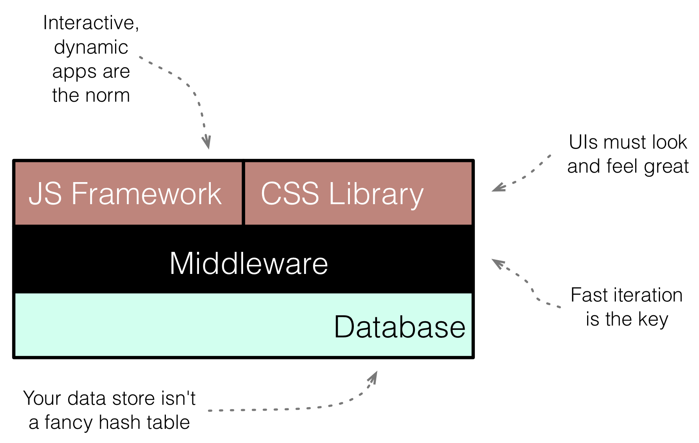

Rails, Angular, Postgres, and Bootstrap
Powerful, Effective, and Efficient Full-Stack Web Development
A Book by David Bryant Copeland
Web Development Requires Knowing the Full Stack
- You
- …know a bit of Rails.
- …care about user experience.
- …care about performance.
- …want your code simple, maintainable, and testable.
Take a holistic view of web appliction development.
How you design and use your database is just as important as how you style your user interface. By thinking of problems in the context of the entire application stack, you can produce better solutions than by simply focusing on one area.
The Stack
You'll Learn

View AngularJS and Bootstrap
- Manage front-end assets with Bower
- Create dynamic user interfaces
- Wrangle asynchronous JavaScript for a great user experience
- Lay out user interfaces using grid-based design

Middleware Rails
- Deal with the Asset Pipeline
- Isolate Postgres-specific code
- Test end-to-end with PhantomJS
- Unit test JavaScript with Jasmine and Teaspoon

Datastore PostgreSQL
- Model data using constraints
- Create sophisticated indexes for fast queries
- Store indexed JSON
- Materialized views to simplify complex queries
Why Angular, Postgres, and Bootstrap?
While these aren't the only tools of their type, they are top-notch and widely used. This book will help you get the most out of them.
AngularJS
Tired of slinging JQuery, creating data- attributes, and hacking out your own half-implemented client-side framework? Angular makes all that go away, with clean, testable, well-organized code and front-end templates.
- Dead-simple AJAX calls without callback hell
- Organize your JavaScript sensibly
- De-couple your code into units, like you would in Rails
- Clear separation of view templates and view logic
- Test it all
Postgres
Postgres is a best-of-breed SQL database. If you are used to MySQL, get ready to have your mind blown by what you can do. You'll have powerful tools to manage your data and control your database's performance.
- Indexed and Queriable JSON
- Auto-refreshing materialized Views
- Index on derived values, not just static ones
- Sophisticated Constraints
Bootstrap
Bootstrap is a CSS framework that allows you to create a wide variety of user interfaces and designs without writing any CSS. CSS can be a huge source of complexity and frustration, and Bootstrap gives you a ton of tools to create pretty good user experiences without writing your own.
- Grid-based design
- Attractive and usable forms and buttons
- Panels, flashes, progressbars, and many other components
- Don't write CSS
The Holistic View
Above all else, you'll see how knowledge of these technologies, when considered together, will allow you great freedom in how you approach a particular problem. You won't have to sacrifice user experience, performance, or security, because you'll have a holistic view of your entire application's stack.